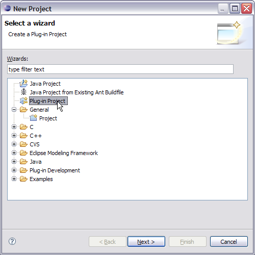
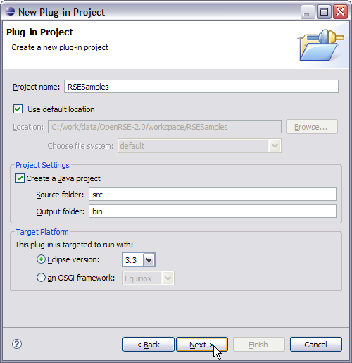
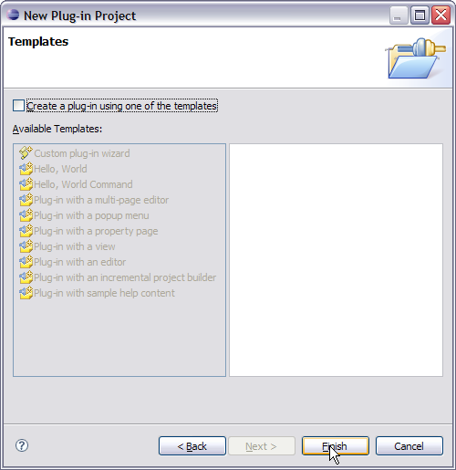

Creating a Plug-in Project
To use any Eclipse extension point, including those defined by the Remote System Explorer, you must first create a plug-in project using the plug-in development environment (PDE), which you will do shortly. At its simplest, a plug-in project requires a MANIFEST.MF file describing the plugin and its dependencies and, if extending the workbench a plugin.xml file identifying the extension points being implemented, and a set of Java classes implementing those extension points. There is usually also a plug-in class file that is used as the overall manager of the project, and point of integration that other classes can rely on.
If you already have a plugin project, you will need to update it slightly to make it extend SystemBasePlugin and add the few methods it requires. You may wish to examine these steps to see what methods to add. The Eclipse environment will keep your classpaths and plugin dependecies in sync for you.
Eclipse supplies a number of plug-in project templates, which generate a number of project files that illustrate examples of various Eclipse extension points. While you are free to pick one of these, or indeed start with any existing plug-in project if you have one, in the RSE tutorials everything is created by hand so as to keep focused on the RSE-required classes and files.
The following tutorial uses numbered steps to indicate where you are required to do something as you follow along.
Step By Step: Creating an RSE Plug-in Project
- Select File->New->Project.
- In the dialog box select the Plug-in Project wizard. Click Next >.

- In the first page of the wizard enter "RSESamples" for the project name (without the quotes). Click Next >.

- In the second page of the wizard enter your company for the Plug-in Provider, change the Activator to be "rsesamples.RSESamplesPlugin", and click Next >.

- In the third page of the wizard uncheck the "Create a plug-in using one of the templates" checkbox and click Finish.

- Your new plugin project is created and visible in the Package Explorer of the Plug-in Development perspective. Your new plugin properties are also open in the plug-in editor.
- Go to the dependencies tab of the plug-in editor and add the following plugins to the list:
- org.eclipse.core.resources
- org.eclipse.rse.ui
- org.eclipse.rse.services
- org.eclipse.rse.files.ui
- org.eclipse.rse.shells.ui
- org.eclipse.rse.subsystems.files.core
- org.eclipse.rse.subsystems.shells.core
- Now go to the MANIFEST.MF tab of the plugin properties.
This shows the source for the MANIFEST.MF file associated with this plugin.
Change the Bundle-SymbolicName line adding a singleton:=true directive.
Bundle-SymbolicName:RSESamples;singleton:=true
This allows us to add extensions to the plugin at a later point.
Save the plugin properties and close the editor.
-
Right-click on the RSESamples project and create a plugin.xml file.
Normally this would be created if you used a template to create your plugin.
We will use this file to add extensions to RSE but for now it will just be a skeleton with the following contents:
<plugin>
</plugin>
Add the lines above to the empty plugin.xml file and save it.
- Expand the src folder, then the rsesamples package folder, and double-click on RSESamplesPlugin.java to edit this class.
Change it as described below. Reference the source here for the details.
- Extend SystemBasePlugin instead of AbstractUIPlugin
- Add the declaration for resourceBundle
- Add the declaration for messageFile
- Invoke the superclass constructor from this constructor
- Add the initializeImageRegistry() method
- Add the getMessageFile() method
- Add the getResourceBundle() method
- Add the static getWorkspace() method
- Add the static getResourceString(String) method
- Add the static getPluginMessageFile() method
- Add the static getPluginMessage(String) method
- Create the project's resources file for translatable strings: right-click on the RSESamples project and select New->File to open the New File wizard. Enter rseSamplesResources.properties for the file name, as was specified in the call to loadResourceBundle in the plug-in class's constructor. Press Finish to create the file. You will populate as you go through the tutorials, so for now just close the editor opened for the file.
- Create the project's RSE-style messages file for translatable messages: right-click on the RSESamples project and select New->File to get the New File wizard. Enter rseSamplesMessages.xml for the file name, as was specified in the call to loadMessageFile in the plug-in class's constructor. Press Finish to create the file. You will see the XML editor open for the new file. Press the Source tab at the bottom of the editor, and enter the following lines (so that you can add messages to the file later on):
<?xml version="1.0" encoding='UTF-8'?>
<!DOCTYPE MessageFile SYSTEM "../org.eclipse.rse.ui/messageFile.dtd">
<!-- This is a message file used by SystemMessage and SystemMessageDialog -->
<MessageFile Version="1.0">
<Component Name="RSE Samples" Abbr="RSS">
<Subcomponent Name="General" Abbr="G">
<MessageList>
<Message ID="1001" Indicator="E">
<LevelOne>Sample message</LevelOne>
<LevelTwo>This is a sample with one substitution variable: %1</LevelTwo>
</Message>
</MessageList>
</Subcomponent>
</Component>
</MessageFile>
Save and close the file.
- Your plugin is created and you are ready to go. Now you only need to add the code to implement the extension points.